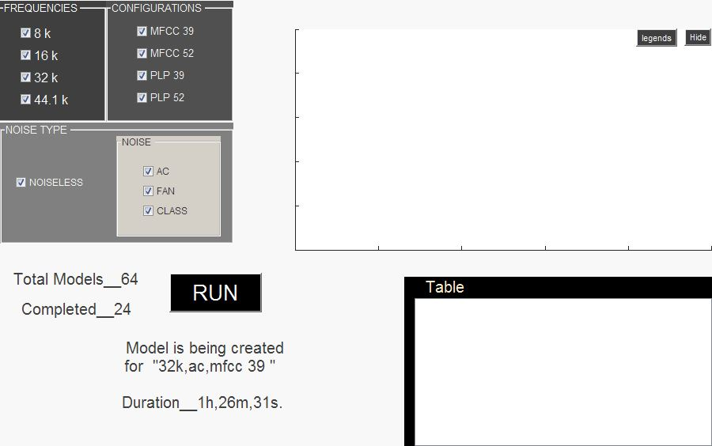

<h1 style="padding-left:4%;padding-top: 2%;padding-bottom: 2%;padding-right: 10%;border-bottom: 1px solid #BDBDBD;">


JPEG-PNG-to-GIF-Converter


</h1>


A Matlab based program


<h2><a href="imggif.mp4" target="_blank"> Process </a></h2>


<h3><u>JPEG Files</u></h3>





<h3><u>GIF File</u></h3>

